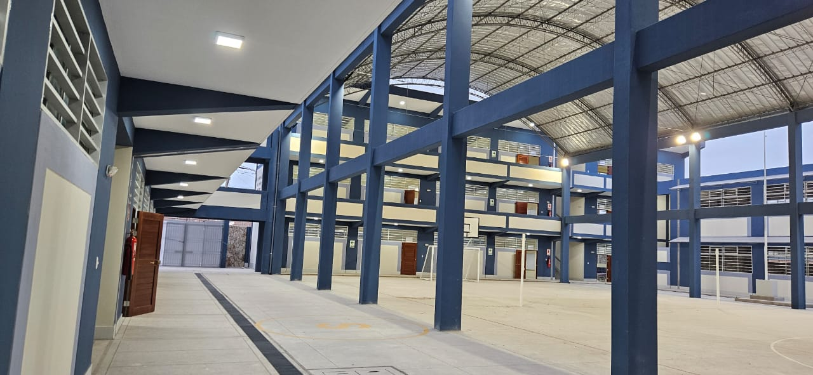
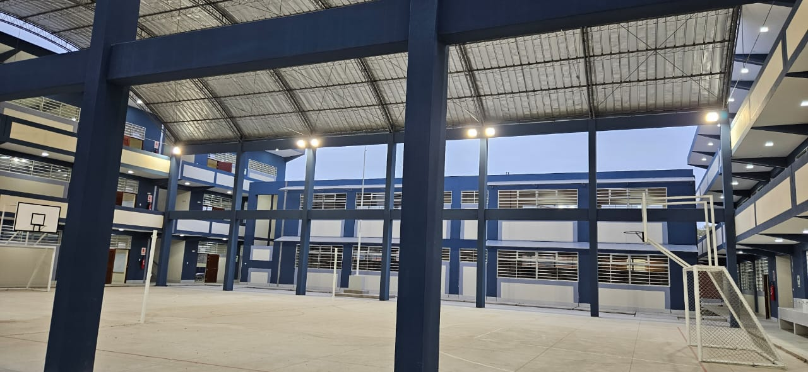

Piura, Perú
Institución pública ubicada en Jirón Blas de Atienza S/N, distrito de Piura, orientada a la formación integral de adolescentes y jóvenes bajo la modalidad de Educación Básica Regular.



Para conocer más sobre las actividades, novedades e información de la institución, visita nuestra página oficial en Facebook.
Facebook de la I.E. Víctor Francisco Rosales Ortega →